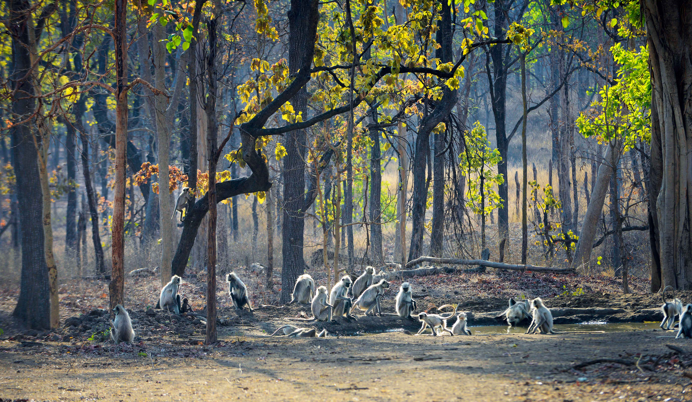
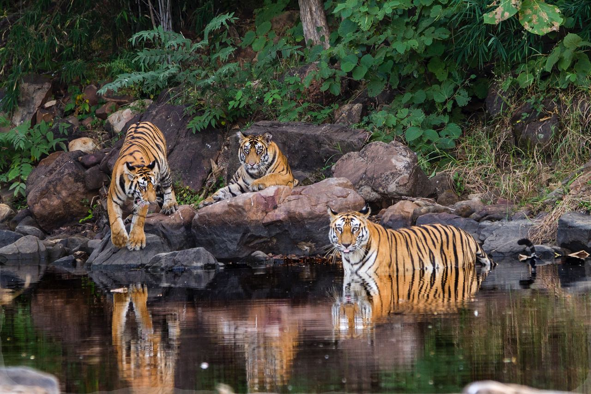
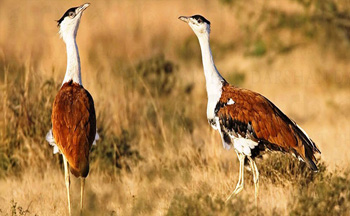

thumb_up
0
thumb_down
0
 The park is situated in the Seoni district of southern Madhya Pradesh and runs in continuation with Pench National Park of Maharashtra. The Pench Wildlife Sanctuary was named after the river Pench that flows nearby. The place was declared as a notified area in 1972 and as the Wildlife Sanctuary in 1983. The park is the 19th Tiger Reserve in the country and has quite a few tigers and other wildlife population. The total of 758 km of area comes under the Pench Tiger Reserve, out of which 299 sq km of the core area forms the National Park and 464 km comprises the buffer area. The park has high density of the Chital, Four Horned Antelopes, Gaur, Muntjac, Nilgai and Wild pig. T is really difficult to spot a tiger over here and it requires a lot of patience and luck to sight one. The park has a huge population bird life as well. The census of the bird population in the park is more than 125 species like Barbets, Blue Kingfishers, Bulbuls, Minivets, Munias, Mynas, Orioles, Wagtails and Waterfowls.
 It is situated in the Umaria district of Madhya Pradesh is spread in the core area of 105 sq. KM.
The landscape of this national park varies between undulating, steep edges open meadows, and forest.
Bandhavgarh National Park has the utmost density of Royal Bengal Tigers in the world.
It is situated in the Umaria district of Madhya Pradesh is spread in the core area of 105 sq. KM.
The landscape of this national park varies between undulating, steep edges open meadows, and forest.
Bandhavgarh National Park has the utmost density of Royal Bengal Tigers in the world.
The Bandhavgarh National Park also features a wide variety of wildlife fauna including Leopards, Sambar, sloth bear, ratel, jungle cat, leopard, grey mongoose, Barking Deer, Sambar, Chausingha, Nilgai, and Chinkara are to name a few.
Along with this the park also features a wide variety of species of birds like Grey Hornbill, Common Teals, Red Jungle Fowl, and White Breasted Kingfisher, etc.
 Panna National Park is situated in at a distance of around 57 km from Khajuraho in the state of Madhya Pradesh. The region of the Panna National Park has growth of Mixed Deciduous Forests. The region has rocky and uneven terrain, which is covered by scrubby vegetation and grass. The park provides a natural habitat to the wildlife species including Chinkara, Chital, Sloth Bear, Sambar, Tiger and Wolf. The Ken River flows through the park towards the north. The river is home to the major Indian species of crocodiles i.e. the Mugger and Long Snouted Gharial. The forests of Panna National Park along with Ken Gharial Sanctuary and adjoining territorial divisions form a significant part of the catchment area of the 406 km (252 mi) Ken River, which runs northeast for about 72 km (45 mi) through the park. Panna National Park and the surrounding forest area of North and South Panna forest division is the only large chunk of wildlife habitat remaining in northern Madhya Pradesh.
 If tigers draw wildlife enthusiasts Bandhavgarh national park in Madhya Pradesh; it is diverse avian army that attract tourists to Karera Bird Sanctuary. Karera Bird Sanctuary is located in Madhya Pradesh and is about 55 kilometres from Shivpuri. The sanctuary is famous for its celebrity inhabitant Indian bustard and is believed to be last refuge of this bird. The studies conducted on the Indian bustard here have revealed that there are three type of bustards found in the sanctuary. The three types of bustards you may come across are Indian bustard, bearded bustard and colored bustard. Experts have recorded 245 species of birds in Karera Bird Sanctuary. Some of the birds you may come across in Karera Bird Sanctuary include teals, herons, Indian robins, pintails and gadwalls. There are a number of water birds like egrets, spoonbills and black-bellied river terns. Karera Bird Sanctuary is also a temporary refuge to migratory birds. Dihaila Jeel in the sanctuary play host to migratory birds, who flock the sanctuary every year. Blackbuck is the celebrity animal in the sanctuary and at the last count there number was 2000